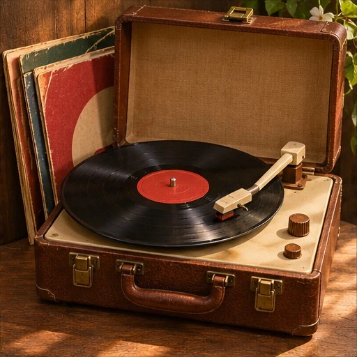
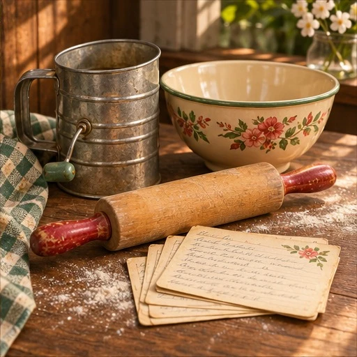
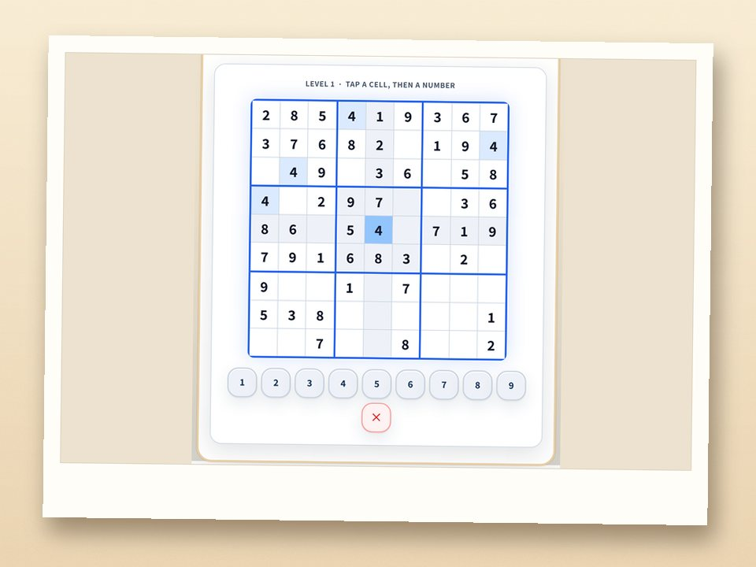

Can You Name These Everyday Objects From the Past?
10 questions. A few smiles. No ticking clock.
Take the quiz10 questions. A few smiles. No ticking clock.
Take the quiz


Card pairs that add to 13.

Familiar words, mixed up for a little fun.

Find the pairs. Enjoy every little discovery.

Fit the pieces and enjoy the picture.

A quiet number puzzle, one square at a time.
The sleeve, the soft crackle, the song you played again. Remember listening with your whole attention?

A wobbling mold, a little foil compartment, a cake turned upside down. Which of these dishes takes you straight back to your family's table?
A recipe tin, a well-used apron, and a table where there was always room for one more.

One television, a favorite seat, and a theme tune that brought everyone into the room.
A blank cassette, a favorite song, and the patience to make something personal.